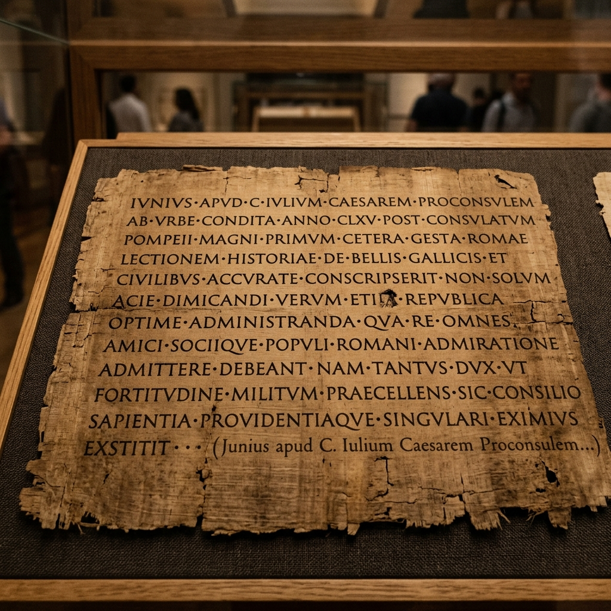

Student Workbook

Task: The historical events below are out of order. Read them carefully, then use your pen to draw arrows connecting the boxes in the correct chronological and causal order (Event A ➔ Event B ➔ Event C...).
It is easy to assume that people in the past did not care about cleanliness, but Iron Age communities developed highly practical systems that suited their way of life. Because farming roundhouses were spread out across the countryside, digging simple, temporary cesspits was a safe, hygienic, and sustainable way to manage waste without polluting nearby drinking water. During the British Iron Age (700 BC - AD 43), most families lived in circular wooden homes called roundhouses, such as those discovered by archaeologists at Silchester. Because the people of this era left no written documents behind, historians must rely on physical clues unearthed from the ground—a field of study known as archaeology. These physical discoveries show that Iron Age communities intentionally built their settlements near fresh springs, streams, or hand-dug wells to secure their daily water supply.
Q2. Explain the significance of iron age settlements & cesspits in the development of sanitation.
This simple way of life was completely transformed in AD 43 when the Roman Empire invaded Britain. The Romans brought revolutionary sanitation technology and a strong belief that clean, flowing water was vital for keeping a society healthy. To bring vast amounts of clean water into their newly built stone towns and military outposts, such as Corbridge, Roman engineers constructed stone channels called conduits. These conduits used the natural pull of gravity to transport fresh water over miles from distant natural springs directly into urban centres.
Q3. Explain the significance of roman conduits & water supply in the development of sanitation.
In Roman Britain, this water supplied grand public bathhouses, such as the famous complex at Bearsden. Bathhouses were bustling social spaces where citizens exercised, relaxed, and washed themselves by walking in sequence through cold rooms, warm rooms, and steaming hot chambers. Clean water also constantly flushed through communal public toilets, known as latrines. At Housesteads Fort on Hadrian's Wall, soldiers sat side-by-side on stone benches built over deep, stone-lined channels. A continuous stream of water beneath the seats swept human waste directly into underground sewers, keeping the fort clean and preventing the spread of deadly diseases. To wipe themselves, Roman soldiers used a wet sponge attached to the end of a shared wooden stick.
Q4. Explain the significance of bathhouses and latrines in the development of sanitation.
When the Romans finally left Britain around AD 410, much of this advanced engineering was abandoned, and sanitation slipped back into primitive patterns for centuries.
Q5. Explain the significance of the roman withdrawal in the development of sanitation.



In rural villages, such as Wharram Percy in Yorkshire, ordinary peasants lived simple lives intimately tied to the changing seasons and the natural landscape. Securing clean water was a daily physical struggle that required backbreaking labor. Without any form of indoor plumbing, villagers had to collect their drinking and washing water by hand, carrying heavy wooden buckets from local springs, fast-flowing streams, or deep hand-dug communal wells. For their sanitation needs, peasants constructed rudimentary wooden outhouses situated over shallow earth pits at the bottom of their gardens, using handfuls of wild moss or leaves as natural toilet paper. Because medieval villages were small, sparsely populated, and surrounded by vast tracts of open land, these simple cesspits were highly practical. The natural soil effectively absorbed and filtered the waste, ensuring that it did not contaminate the local water supply or trigger major health crises.
Q2. Explain the significance of peasant cesspits (wharram percy) in the development of sanitation.
In stark contrast to the rustic simplicity of peasant villages, medieval monasteries were the absolute pinnacle of luxury and engineering sophistication in Medieval England. Christian monks were highly literate, exceptionally wealthy, and incredibly organized, managing vast agricultural estates. Crucially, they believed that physical cleanliness was a reflection of spiritual purity, bringing them closer to God and aiding their holy duties. Driven by this belief, monasteries designed and constructed highly complex water management systems using incredibly expensive imported lead and hollowed-out elm trunks for pipes. For example, surviving twelfth-century blueprints of Canterbury Priory reveal a sophisticated, gravity-fed network of green-colored pipes bringing fresh, pressurized spring water directly into the monastery for drinking and ceremonial washing. Meanwhile, a separate network of red-colored pipes was specifically designed to direct dirty wastewater away to continuously flush the communal latrines, keeping the air remarkably fresh.
Q3. Explain the significance of monastic luxury (canterbury priory) in the development of sanitation.
The most severe and lethal sanitation crises of the era occurred in the rapidly growing and heavily overcrowded medieval towns, such as London and York. The high population density meant that thousands of people were crammed into tightly packed wooden houses lining narrow, unpaved streets. In these conditions, shared communal toilets overflowed rapidly, leaking raw human waste directly into the mud of the streets and seeping into nearby shallow wells. While wealthy merchants could afford to dig deep, private, stone-lined wells in their secure courtyards, poorer citizens faced a daily battle for clean water. They were often forced to buy expensive, unfiltered river water from professional 'water sellers'—laborers who hauled massive wooden barrels through the filthy streets on horseback, shouting to attract customers.
Q4. Explain the significance of urban filtration crisis in the development of sanitation.
To prevent these rapidly expanding towns from literally drowning in their own filth, city councils were forced to employ highly specialized, well-paid laborers known as 'gongfermers.' These men performed one of the most vital, yet utterly revolting, jobs in medieval society. Working strictly under the cover of darkness to avoid offending the public with the smell, gongfermers climbed down into deep, barrel-lined cesspits beneath public latrines and private homes. Armed only with wooden shovels and buckets, they scooped out the accumulated human waste, loaded it onto heavy horse-drawn carts, and transported it outside the town walls to be dumped in designated rural fields, where it was often sold to local farmers as potent agricultural fertilizer.
Q5. Explain the significance of gongfermers and night-work in the development of sanitation.
The situation in major cities became so desperate that even the monarchy was forced to intervene. In 1357, King Edward III personally sent a scathing letter to the Mayor of London, expressing his absolute horror at the state of the capital. The King warned that the overwhelming filth and decaying animal carcasses lying in the streets were infecting the air with a terrible stench, which medieval physicians believed was directly causing deadly sickness—a concept known as 'miasma'. Edward III ordered the immediate, forceful removal of all waste and the strict fining of anyone caught dumping garbage in the River Thames, marking a significant early instance of royal intervention to preserve public health.
Q6. Explain the significance of edward iii's cleanliness mandate in the development of sanitation.
The conceptual leap toward modern sanitation arrived during the Tudor period when the first flushing toilet—known as the water closet—was invented in 1596 by a brilliant but eccentric courtier named Sir John Harington. Harington designed and installed this mechanical marvel in his manor house, and later built a working model for his godmother, Queen Elizabeth I, at Richmond Palace. The device used a system of valves and a cistern of water to wash away human waste into a vault below. Yet, despite its ingenuity, almost no one adopted it. For a flushing toilet to function safely, a house required a constant, pressurized supply of running water to fill the cistern and a connection to a sprawling underground sewer system to wash the waste away. Because Early Modern London completely lacked both of these municipal networks, Harington’s visionary invention remained a useless, foul-smelling luxury isolated to the royal court.
Q2. Explain the significance of sir john harington's flushing toilet in the development of sanitation.
However, monumental strides were being made in supplying the capital with fresh water. In 1613, a wealthy goldsmith and entrepreneur named Sir Hugh Myddelton successfully completed the 'New River' project. This was a colossal, highly ambitious engineering feat that involved digging an artificial waterway to bring fresh, clean spring water from Hertfordshire across 38 miles of countryside directly into North London. Relying entirely on gravity, the New River transformed the city's water infrastructure. It provided London with a relatively clean and reliable water supply to feed the houses of wealthy subscribers through an extensive network of hollowed-out wooden pipes laid beneath the city streets, vastly improving living standards for those who could afford the subscription fee.
Q3. Explain the significance of the new river (1613) in the development of sanitation.
Despite the influx of fresh water, dealing with human waste remained a horrifying challenge in crowded 17th-century cities. To save space, many opportunistic landlords built indoor toilets known as 'houses of easement' that simply emptied directly into deep, unlined cellars immediately below the floorboards. In his world-famous diary entry on 20 October 1660, the wealthy government official Samuel Pepys recorded a disgusting reality of Early Modern urban life. He complained bitterly about the terrible, eye-watering stench of his neighbor's cellar privy, which had filled to bursting, leaked directly through the shared foundations, and completely flooded his own basement with raw human waste. It was a stark reminder that personal wealth could not protect citizens from the collective failure of urban sanitation.
Q4. Explain the significance of samuel pepys' diary (privy leak) in the development of sanitation.
By the year 1700, London's population had exploded to over 600,000, making it the largest city in Western Europe. Yet, the municipal systems to handle basic human needs completely failed to match this staggering, unprecedented growth. While the wealthy enjoyed piped water from the New River, poorer townspeople were left to struggle. They were forced to buy their drinking water from professional 'water sellers' who continued to haul large wooden barrels on horseback through the increasingly congested streets. Alternatively, women and children spent hours waiting in long, exhausting lines to gather a few precious buckets of water from public 'conduits'—communal lead cisterns that often ran dry during the hot summer months, leaving the poorest citizens vulnerable to thirst and disease.
Q5. Explain the significance of early modern water sellers in the development of sanitation.
Between 1750 and 1850, the Industrial Revolution triggered an unprecedented demographic explosion, causing Britain's population to skyrocket from roughly 6 million to over 21 million. Desperate for employment and a better life, thousands of rural agricultural families flooded into rapidly expanding, smoke-filled cities like Manchester, Leeds, and London to work in enormous steam-powered textile factories and deep coal mines. This resulted in an era of rapid, totally unregulated urbanization. Cities expanded so violently that local governments were entirely overwhelmed. Without any planning laws or building regulations, the sheer speed of this migration resulted in intense, suffocating crowding, transforming once-small market towns into sprawling industrial metropolises choked with soot and desperate workers.
Q2. Explain the significance of population surge and urbanization in the development of sanitation.
To maximize their profits from this desperate influx of workers, opportunistic landlords hastily built cheap, structurally unsound 'back-to-back' terraced brick housing blocks. These rows of houses shared three walls with their neighbors, meaning they had no rear windows, absolutely zero cross-ventilation, and trapped the damp, polluted air inside. Crucially, these poorer families did not have the luxury of indoor running water or private toilets. Instead, entire streets of up to 100 people had to rely on a single, shared outdoor street pump and perhaps two communal privies located in a filthy shared yard. The street pumps only supplied water for a few unpredictable hours a day, and this water was often visibly brown, foul-tasting, and highly polluted by industrial runoff and human waste leaking from the adjacent privies.
Q3. Explain the significance of back-to-backs and shared pumps in the development of sanitation.
This catastrophic lack of sanitation created the perfect breeding ground for disease. Cholera, a terrifying and agonizing waterborne bacterial infection, struck Britain for the first time in 1831, having spread along global trade routes from India. The disease caused rapid, uncontrollable diarrhea and vomiting, leading to severe dehydration; victims' skin would turn a ghastly shade of blue before they died, often within 24 hours of showing the first symptoms. Over 31,000 people died in the horrifying first epidemic alone. Because doctors falsely believed the disease was spread by 'miasma'—bad, foul-smelling air—their attempts to fight it by burning tar in the streets were useless. The terrifying speed of the deaths triggered mass national panic and starkly highlighted the catastrophic, deadly failure of municipal public health.
Q4. Explain the significance of cholera epidemics (1831–1866) in the development of sanitation.
In response to the mounting death toll and public outcry, a dedicated civil servant named Edwin Chadwick launched a massive, pioneering investigation into the living conditions of the poor. In 1842, he published his landmark 'Report on the Sanitary Condition of the Labouring Population.' Using rigorous statistical data, Chadwick explicitly documented the horrific filth, suffocating damp, and overcrowded conditions of the industrial working class. He forcefully argued that poverty and disease were not caused by laziness, but by the horrific physical environment. Chadwick strongly advocated for a unified, national system of deep arterial drainage and a constant, pressurized supply of clean water to every home, laying the intellectual foundation for the modern public health movement.
Q5. Explain the significance of edwin chadwick's report (1842) in the development of sanitation.

For decades, the medical establishment stubbornly clung to the 'Miasma Theory,' believing that all diseases were spread by foul-smelling, invisible clouds of bad air. However, during the devastating 1854 cholera outbreak in the Soho district of London, a brilliant physician named Dr. John Snow fundamentally challenged this assumption. By painstakingly mapping the precise locations of hundreds of cholera deaths on a street map, Snow noticed a terrifying cluster centered around a single, highly popular water pump on Broad Street. He proved that the victims were not breathing the same air, but drinking the same contaminated water, which was secretly drawing from a nearby leaking cesspit. By physically removing the pump's handle so the public could no longer drink the infected water, Snow single-handedly stopped the Soho outbreak, scientifically proving that cholera was waterborne.
Q2. Explain the significance of john snow's broad street map in the development of sanitation.
Despite John Snow's brilliant statistical proof, the government remained paralyzed by the enormous cost of rebuilding London's sewers. It took an overwhelming environmental crisis to force them into action. During the unusually hot and dry summer of 1858, the River Thames—which received the raw, untreated sewage of over two million Londoners—began to literally bake in the sun. The resulting stench was so incredibly overpowering and nauseating that it became known as 'The Great Stink.' The smell completely disrupted parliamentary meetings in the newly built Palace of Westminster, forcing politicians to flee the building with handkerchiefs soaked in chloride of lime pressed to their faces. Terrified by the stench and finally personally affected by the crisis, Parliament rapidly passed emergency legislation to fund a complete rebuild of the capital's sanitation networks.
Q3. Explain the significance of the great stink of london in the development of sanitation.
Tasked with this monumental challenge, the visionary Chief Engineer of the Metropolitan Board of Works, Joseph Bazalgette, designed and constructed one of the greatest engineering marvels of the 19th century. Between 1858 and 1865, his massive army of 'navvies' (laborers) excavated millions of tons of earth to build a spectacular, interconnected network of 1,300 miles of deep, enclosed brick sewers beneath London. Bazalgette utilized revolutionary Portland cement to ensure the tunnels were entirely watertight. This ingenious system successfully intercepted the city's waste before it could reach the Thames, using massive steam-powered pumping stations to divert it far downstream toward the sea. Bazalgette's sewers virtually eliminated cholera in the capital, saving tens of thousands of working-class lives.
Q4. Explain the significance of bazalgette's sewer system in the development of sanitation.
While British engineers were building massive physical barriers against disease, scientists on the continent were finally uncovering the invisible biological culprits. In 1861, the brilliant French microbiologist Louis Pasteur definitively proved 'Germ Theory' through a series of elegant experiments with swan-necked flasks. Pasteur demonstrated that microscopic, living organisms—bacteria—were responsible for the decay of organic matter and the spread of infections. This groundbreaking discovery completely destroyed the old Miasma theory. It provided the definitive, undeniable scientific backing that reformers like Chadwick and Snow had lacked, proving that advanced sanitation, sterile medical environments, and strict public hygiene were absolute necessities to stop the transmission of deadly germs.
Q5. Explain the significance of pasteur's germ theory in the development of sanitation.
Armed with the irrefutable scientific truth of Germ Theory and the undeniable success of Bazalgette’s sewer system, the British government decisively abandoned its old policy of 'laissez-faire' (leaving things alone). In 1875, Parliament passed a landmark, uncompromising Public Health Act. This revolutionary legislation legally forced every local municipal council in the country to take strict, inescapable responsibility for the physical well-being of its citizens. The Act mandated that councils must provide clean, piped water, ensure the safe disposal of all sewage, pave and clean the streets, and employ specialized Medical Officers of Health to inspect poor housing. It marked a permanent, fundamental shift in the relationship between the state and the people, establishing the modern expectation that the government must protect public health.
Q6. Explain the significance of public health act of 1875 in the development of sanitation.
Instructions: Answer the 50 quick-fire recall questions below. If you get stuck, the scrambled answers are provided in the Answer Bank on the final page.
1,300 miles • A wet sponge attached to the end of a shared wooden stick • Cholera • Ensure all houses had piped clean water and proper sewer connections. • From a shared pump in the street or yard that only ran for a few hours. • He persuaded the local parish to remove the Broad Street pump handle. • Houses lacked running piped water and connections to street sewers • Housesteads Fort on Hadrian's Wall • It skyrocketed from 6 million to 21 million. • Landlords refused to pay for them to be emptied, and they were not connected to sewers. • Louis Pasteur • Miasma Theory (the belief that disease is spread by bad smells) • Pipes carrying dirty waste water away to flush the toilets • Roundhouse settlements were spread out and temporary pits kept waste away from springs • Samuel Pepys • Sir John Harington • Stone channels called conduits that utilized the natural pull of gravity • The Great Stink of the River Thames • The low population density meant waste did not build up enough to contaminate water supplies • The population grew rapidly, putting too much pressure on crowded town systems • They bought it from water sellers who hauled river water in barrels • To avoid disrupting the busy town streets with terrible smells and waste carts • Transporting river water in large barrels on horseback to sell to homes • Washing in sequence through cold, warm, and hot rooms • Wild moss